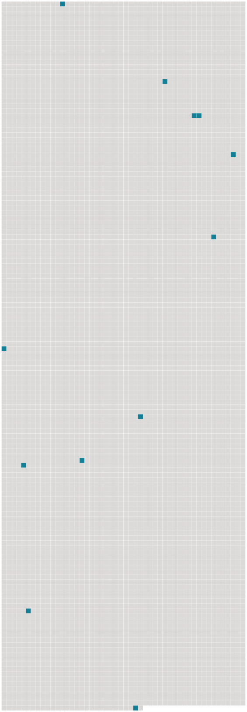

Longueur nb maillons : 12 mentions |
 |
« Il n'est pas prudent de laisser les enfants seuls à [Paris] [26 phrases] Madame Lapierre est une jeune femme infirme, venue à la Haie quelques années plus tôt sur le conseil de mes parents qui l'ont connue à [Paris] [11 phrases] C'est, entre nous, la plupart du temps des propos se rapportant à [Paris] [que] nous regrettons toutes deux. [13 phrases] Vers la fin de juillet ma mère me prévint que les enfants passeraient leurs vacances à [Paris] [45 phrases] Les récoltes rentrées et la vendange faite, Manine dut se résigner à prendre un nourrisson de [Paris] [46 phrases] Pendant son court séjour à [Paris] , elle avait trouvé le moyen de se rendre chez mes parents. [30 phrases]
Il y avait à [Paris] une maison dans laquelle je pouvais entrer malgré fenêtres et portes closes, et où je trouvais toujours des êtres capables de répandre sur moi une grande chaleur et beaucoup de lumière. [18 phrases]
Je devins maussade ; l'impatience me prit et j'en arrivai bientôt à dire que j'étais assez grande pour agir à ma guise, et que j'allais partir pour [Paris] sans attendre l'appel de mes parents.
Oncle meunier n'alla pas contre ma volonté de départ, il me dit seulement : [70 phrases]
Et, autant qu'à [Paris] , disait -elle, elle comptait sur moi pour la remplacer auprès de mes frères et sœurs. [34 phrases]
Et soudain, au moment où on s'y attendait le moins, le voilà debout, tout en gestes et nous disant : |
 |
La ressource peut être téléchargée sur la page Ortolang
Si vous avez des questions ou vous voyez des erreurs, merci d'envoyer un mail à silvia.federzoni89@gmail.com
Site développé par S. Federzoni (contact)